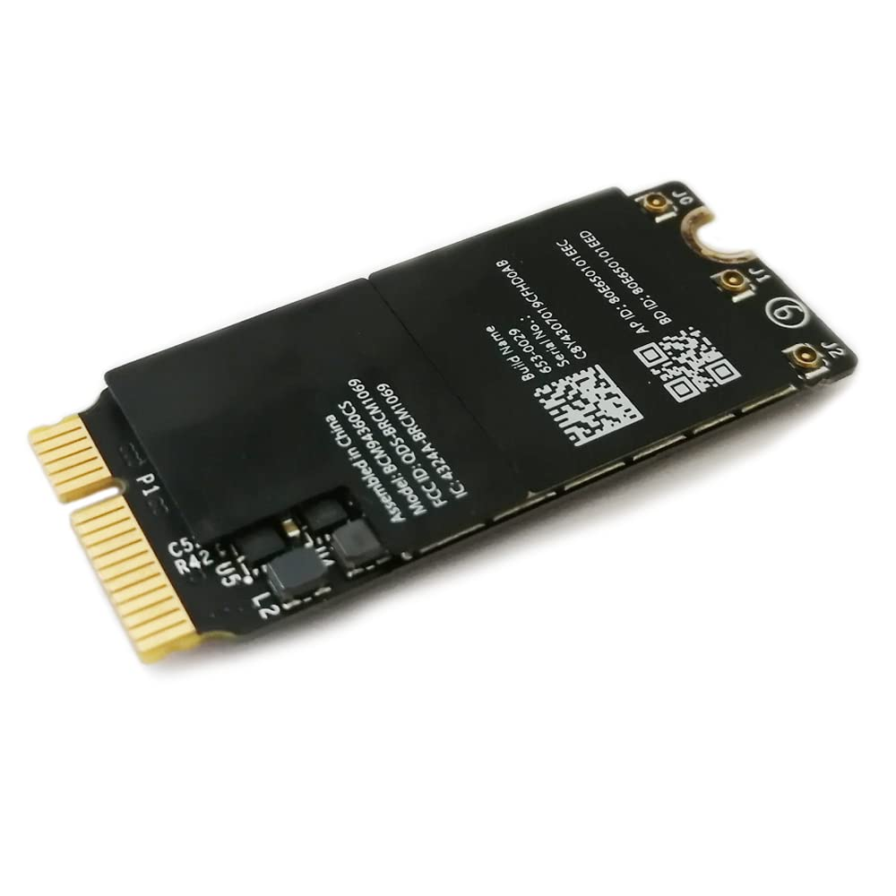

This is a simple webpage project for educationl purposes.
Installing Arch Linux on a 2014 MacBook Pro
This webpage project is a comprehensive guide detailing my personal experience
and efforts in installing Arch Linux on a 2014 MacBook Pro. This process can be
challenging, especially due to hardware-specific constraints on older MacBook models.
I’ve aimed to share useful insights, lessons learned, and solutions that may
help others facing similar obstacles.
The Major Challenge: No Built-in Ethernet Port
One of the biggest hurdles for me—and for many others attempting this installation on a MacBook Pro from this era—is the absence of a built-in LAN (Ethernet) port. Installing Arch Linux typically requires a stable internet connection, especially during the installation phase when you need to download essential packages and system components.
Since this MacBook model only supports Wi-Fi for networking out of the box, two solutions are commonly considered:
Using a USB-to-Ethernet Adapter: The easiest way to work around the missing Ethernet port is by using a USB-to-Ethernet adapter. This allows you to establish a wired network connection for downloading packages during installation. While this seems straightforward, not all adapters are plug-and-play on Linux. You might need to pre-load drivers or ensure the adapter is recognized by the system before starting the installation.
Configuring the Built-in Wi-Fi: The more complex, yet viable alternative is setting up the Wi-Fi connection directly within the Arch Linux installation environment. MacBooks, especially older models like the 2014 version, often use proprietary Broadcom wireless chips, which can make this process tricky. These chips require proprietary drivers (such as
broadcom-wlorb43-firmware) to function correctly on Linux.Loading Wi-Fi drivers: To get the Wi-Fi working during the Arch installation, you may need to pre-download the necessary drivers onto a USB drive or another storage device, then install them in the live environment.
NetworkManager Setup: Once the drivers are installed, using tools like
iwctl(part ofiwd) orNetworkManagerin the live environment can help establish a Wi-Fi connection. This step requires a bit of command-line work to scan for available networks, connect, and verify the connection before proceeding with the actual installation.
Additional Technical Considerations
Partitioning and macOS Coexistence: If you’re planning to dual-boot Arch Linux alongside macOS, you'll need to manage your partitions carefully. Tools like
gdiskorpartedare essential for creating separate partitions for Arch without disturbing your existing macOS installation. Additionally, ensuring the use of the correct bootloader, such assystemd-bootorrEFInd, is critical to maintaining a smooth dual-boot setup.EFI and UEFI Setup: MacBook Pros, starting from around 2011, exclusively use the EFI bootloader instead of the traditional BIOS. This means you’ll need to install Arch Linux in UEFI mode. Configuring the bootloader correctly is key to booting into Arch once the installation is complete.
systemd-bootis a solid choice for Arch, given its simplicity and UEFI compatibility, and it works well with the MacBook’s hardware.Dealing with Apple-Specific Hardware:
Trackpad: The MacBook Pro's multi-touch trackpad may require additional drivers or tweaking. Packages like
xf86-input-mtrackcan be installed to improve its functionality and support gestures on Arch.Display and Graphics: The MacBook’s Retina display might need further configuration for optimal resolution and scaling. For Intel-based models, the
intelormodesettingdrivers should work, but additional settings inXorgmight be required for better performance.